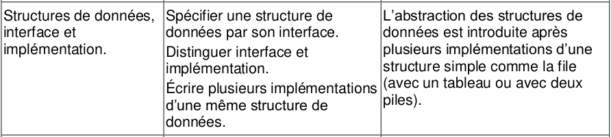
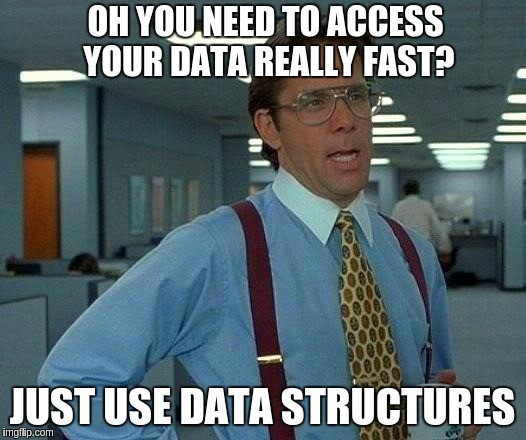
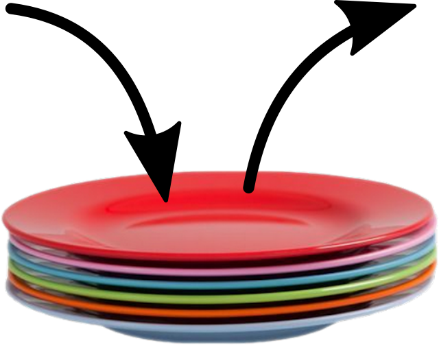
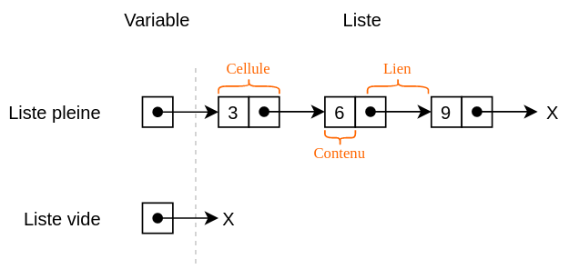
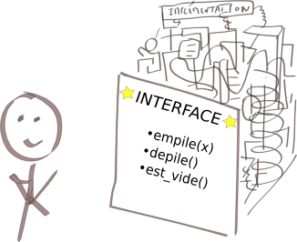

Listes, piles, files⚓︎



0. Préambule : interface ≠ implémentation  ⚓︎
⚓︎
Les structures que nous allons voir peuvent s'envisager sous deux aspects :
- le côté utilisateur, qui utilisera une interface pour manipuler les données.
- le côté concepteur, qui aura choisi une implémentation pour construire la structure de données.
Un exemple d'interface et d'implémentation
- Le volant et les pédales d'une voiture constituent une partie de son interface.
- L'implémentation va désigner tous les mécanismes techniques qui sont mis en œuvre pour que (par exemple) le mouvement de rotation du volant aboutisse à un changement de direction des roues.
- La standardisation des interfaces fait qu'un utilisateur peut passer sans problème d'une voiture à une autre, même si l'implémentation est complètement différente.

Nous avons déjà abordé ces deux aspects lors de la découverte de la Programmation Orientée Objet. Le principe d'encapsulation fait que l'utilisateur n'a qu'à connaître l'existence des méthodes disponibles, et non pas le contenu technique de celle-ci. Cela permet notamment de modifier le contenu technique (l'implémentation) sans que les habitudes de l'utilisateur (l'interface) ne soient changées.
1. Structures de données linéaires⚓︎
1.1 À chaque donnée sa structure⚓︎
En informatique comme dans la vie courante, il est conseillé d'adapter sa manière de stocker et de traiter des données en fonction de la nature de celles-ci :
- Le serveur d'un café, chargé de transporter les boissons du comptoir aux tables des clients, n'utilisera pas un sac en plastique pour faire le transport : il préfèrera un plateau.
- Le chercheur de champignons, lui, n'utilisera pas un plateau pour stocker ses trouvailles : il préfèrera un panier.
- Pour stocker des chaussettes, on préfèrera les entasser dans un tiroir (après les avoir appairées), plutôt que de les suspendre à des cintres.
De même en informatique, pour chaque type de données, pour chaque utilisation prévue, une structure particulière de données se revèlera (peut-être) plus adaptée qu'une autre.
1.1.1 Données linéaires⚓︎
Intéressons nous par exemple aux données linéaires. Ce sont des données qui ne comportent pas de hiérarchie : toutes les données sont de la même nature et ont le même rôle. Par exemple, un relevé mensuel de températures, la liste des élèves d'une classe, un historique d'opérations bancaires...
Ces données sont «plates», n'ont pas de sous-domaines : la structure de liste paraît parfaitement adaptée.
Lorsque les données de cette liste sont en fait des couples (comme dans le cas d'une liste de noms/numéros de téléphone), alors la structure la plus adaptée est sans doute celle du dictionnaire.
Les listes et les dictionnaires sont donc des exemples de structures de données linéaires.
1.1.2 Données non-linéaires⚓︎
Même si ce n'est pas l'objet de ce cours, donnons des exemples de structures adaptées aux données non-linéaires :
Si une liste de courses est subdivisée en "rayon frais / bricolage / papeterie" et que le rayon frais est lui-même séparé en "laitages / viandes / fruits & légumes", alors une structure d'arbre sera plus adaptée pour la représenter. Les structures arborescentes seront vues plus tard en Terminale.
Enfin, si nos données à étudier sont les relations sur les réseaux sociaux des élèves d'une classe, alors la structure de graphe s'imposera d'elle-même. Cette structure sera elle-aussi étudiée plus tard cette année.
1.2 Comment seront traitées ces données linéaires ? Introduction des listes, des piles et des files⚓︎
La nature des données ne fait pas tout. Il faut aussi s'intéresser à la manière dont on voudra les traiter :
- À quelle position les faire entrer dans notre structure ?
- À quel moment devront-elles en éventuellement en sortir ?
- Veut-on pouvoir accéder rapidement à n'importe quel élément de la structure, ou simplement au premier ? ou au dernier ?
Lorsque ces problématiques d'entrée/sortie n'interviennent pas, la structure «classique» de liste est adaptée. Mais lorsque celle-ci est importante, il convient de différencier la structure de pile de celle de file.
1.2.1 Les piles (stack)⚓︎

Une structure de pile (penser à une pile d'assiette) est associée à la méthode LIFO (Last In, First Out) : les éléments sont empilés les uns au-dessus des autres, et on ne peut toujours dépiler que l'élément du haut de la pile. Le dernier élément à être arrivé est donc le premier à être sorti.
Exemples de données stockées sous forme de pile
- lors de l'exécution d'une fonction récursive, le processeur empile successivement les appels à traiter : seule l'instruction du haut de la pile peut être traitée.

- dans un navigateur internet, la liste des pages parcourues est stockée sous forme de pile : la fonction «Back» permet de «dépiler» peu à peu les pages précédemment parcourues :
- lors d'un Devoir Surveillé, la dernière copie remise sur le bureau du professeur est (souvent) la première corrigée.
1.2.2 Les files (queue)⚓︎

Une structure de file (penser à une file d'attente) est associée à la méthode FIFO (First In, First Out) :
les éléments sont enfilés les uns à la suite des autres, et on ne peut toujours défiler que l'élément du haut de la file. Le premier élément à être arrivé est donc le premier à en sortir. Sinon ça râle dans la file d'attente.

Exemples de données stockées sous forme de file :
- les documents envoyés à l'imprimante sont traitées dans une file d'impression.
- la «queue» à la cantine est (normalement) traitée sous forme de file.
1.2.3 Le problème du stockage : transformer les piles en files⚓︎
Dans les entrepôts de stockage, comme dans les rayons d'un supermarché, la structure naturelle est celle de la pile : les gens attrapent l'élément situé devant eux («en haut de la pile»). Si les employés du supermarché remettent en rayon les produits plus récents sur le dessus de la pile, les produits au bas de la pile ne seront jamais choisis et périmeront.
Ils doivent donc transformer la pile en file : lors de la mise en rayon de nouveaux produits, ceux-ci seront placés derrière («au bas de la file») afin que partent en priorité les produits à date de péremption plus courte.
On passe donc du LIFO au FIFO.
Certains dispositifs permettent de le faire naturellement :
Ci-dessous, une file... de piles (électriques). Le chargement par le haut du distributeur fait que celle qui sera sortie (en bas) sera celle qui aura été rentrée en premier (par le haut). Ce FIFO est donc provoqué naturellement par la gravité (et un peu d'astuce).
 On notera que cette problématique est universelle : voir par exemple ce site.
On notera que cette problématique est universelle : voir par exemple ce site.
Après avoir présenté rapidement ces trois types de données linéaires, nous allons maintenant les étudier plus en détail, et proposer pour chacune d'elles une interface et plusieurs implémentations.
2. Les listes⚓︎
2.1 Définition générale⚓︎
Une liste est un ensemble ordonné d'objets. Généralement, ces données seront de même type, mais ce n'est pas structurellement obligatoire.
2.2 Les listes chaînées (linked lists)⚓︎

Lorsque l'implémentation de la liste fait apparaître une chaîne de valeurs, chacune pointant vers la suivante, on dit que la liste est une liste chaînée.

Implémentation choisie :
- Une liste est caractérisée par un ensemble de cellules.
- Le lien (on dira souvent le «pointeur») de la variable est un lien vers la première cellule, qui renverra elle-même sur la deuxième, etc.
- Chaque cellule contient donc une valeur et un lien vers la cellule suivante.
- Une liste peut être vide (la liste vide est notée
xou bienNonesur les schémas)
Une conséquence de cette implémentation sous forme de liste chaînée est la non-constance du temps d'accès à un élément de liste : pour accéder au 3ème élément, il faut obligatoirement passer par les deux précédents.
À retenir : dans une liste chaînée, le temps d'accès aux éléments n'est pas constant.
2.3 Exemple d'implémentation minimale d'une liste chaînée⚓︎
Exemple fondateur : implémentation d'une liste chainée en POO 
1 2 3 4 | |
Cette implémentation rudimentaire permet bien la création d'une liste :
>>> lst = Cellule(3, Cellule(5, Cellule(1,None)))
La liste créée est donc :
Mais plus précisément, on a :

Exercice 1
Retrouvez comment accéder aux éléments 3, 5 et 1.
>>> lst.contenu
3
>>> lst.suivante.contenu
5
>>> lst.suivante.suivante.contenu
1
On pourra remarquer que l'interface proposée à l'utilisateur n'est pas des plus pratiques...
2.4 Et les listes de Python ???⚓︎
Nous connaissons déjà les listes de Python :
>>> maliste = [3, 1, -1, 42]
Et nous connaissons aussi (un peu) l'interface de ce type list, notamment avec les méthodes append() ou reverse().
Néanmoins, l'implémentation qui a été choisie par les concepteurs de Python de ce type list fait que le celui-ci se rapproche plus d'un tableau dynamique.
Dans un tableau dynamique :
- le temps d'accès à n'importe quel élément est rapide. Ce temps d'accès est constant quelque soit l'élément : on dit que l'accès est en \(O(1)\).
- l'insertion d'un élément au début ou au milieu de la liste est lente : cela oblige à décaler tous les éléments à droite de celui-ci. Le temps pris par l'insertion est proportionnel au nombre d'éléments à déplacer : on dit que l'insertion est en \(O(n)\).
Dans une liste chaînée :
- le temps d'accès à n'importe quel élément peut être lent (proportionnel à la position de l'élément dans la liste). Le temps d'accès est en \(O(n)\).
- l'insertion d'un élément à l'intérieur de la liste est rapide : il y a simplement à modifier la valeur du lien de la cellule à gauche de l'endroit d'insertion. L'action d'insérer est donc en \(O(1)\). Toutefois, avant d'arriver à l'endroit d'insertion, il faut avoir parcouru toutes les cellules précédentes ! Le temps total d'insertion est donc lui aussi linéaire, en \(O(n)\).
Nous nous servirons parfois du type list de Python dans la suite de ce cours, mais il ne faut pas oublier qu'il n'est pas un «vrai» type list.
2.5 Un exemple d'interface pour les listes⚓︎
Imaginons que nous possédons une interface offrant les fonctionnalités suivantes :
Liste(): crée une liste vide.est_vide: indique si la liste est vide. (renvoie un booléen)ajoute_tete: insère un élément (passé en paramètre) en tête de liste. (ne renvoie rien)renvoie_tete: renvoie la valeur de l'élément en tête de liste ET le supprime de la liste.
Exercice 2
On considère l'enchaînement d'opérations ci-dessous. Écrire à chaque étape l'état de la liste lst et la valeur éventuellement renvoyée.
1. lst = Liste()
2. lst.ajoute_tete(3)
3. lst.ajoute_tete(5)
4. lst.ajoute_tete(1)
5. lst.renvoie_tete()
6. lst.est_vide()
7. lst.ajoute_tete(2)
8. lst.renvoie_tete()
9. lst.renvoie_tete()
10. lst.renvoie_tete()
11. lst.est_vide()
1. lst = Liste() # lst = None
2. lst.ajoute_tete(3) # lst = 3
3. lst.ajoute_tete(5) # lst = 3 5
4. lst.ajoute_tete(1) # lst = 3 5 1
5. lst.renvoie_tete() # lst = 3 5 valeur renvoyée : 1
6. lst.est_vide() # valeur renvoyée : False
7. lst.ajoute_tete(2) # lst = 3 5 2
8. lst.renvoie_tete() # lst = 3 5 valeur renvoyée : 2
9. lst.renvoie_tete() # lst = 3 valeur renvoyée : 5
10. lst.renvoie_tete()# lst = None valeur renvoyée : 3
11. lst.est_vide() # valeur renvoyée : True
3. Les piles⚓︎
Comme expliqué précédemment, une pile travaille en mode LIFO (Last In First Out). Pour être utilisée, l'interface d'une pile doit permettre a minima :
- la création d'une pile vide
- l'ajout d'un élément dans la pile (qui sera forcément au dessus). On dira qu'on empile.
- le retrait d'un élément de la pile (qui sera forcément celui du dessus) et le renvoi de sa valeur. On dira qu'on dépile.
3.1 Utilisation d'une interface de pile⚓︎
Exercice 3
On considère l'enchaînement d'opérations ci-dessous. Écrire à chaque étape l'état de la pile p et la valeur éventuellement renvoyée.
Bien comprendre que la classe Pile() et ses méthodes n'existent pas vraiment. Nous jouons avec son interface.
On prendra pour convention que la tête de la pile est à droite.
1. p = Pile()
2. p.empile(3)
3. p.empile(5)
4. p.est_vide()
4. p.empile(1)
5. p.depile()
6. p.depile()
7. p.empile(9)
8. p.depile()
9. p.depile()
10. p.est_vide()
1. p = Pile() # p = None
2. p.empile(3) # p = 3
3. p.empile(5) # p = 3 5 par convention
4. p.est_vide() # False
4. p.empile(1) # p = 3 5 1
5. p.depile() # p = 3 5 valeur renvoyée : 1
6. p.depile() # p = 3 valeur renvoyée : 5
7. p.empile(9) # p = 3 9
8. p.depile() # p = 3 valeur renvoyée :9
9. p.depile() # p est vide valeur renvoyée : 3
10. p.est_vide() # True
3.2 Implémentation(s) d'une pile⚓︎
L'objectif est de créer une classe Pile. L'instruction Pile() créera une pile vide. Chaque objet Pile disposera des méthodes suivantes :
est_vide: indique si la pile est vide (renvoie un booléen)empile: insère un élément (passé en paramètre) en haut de la pile. Ne renvoie rien.depile: renvoie la valeur de l'élément en haut de la pile ET le supprime de la pile.
Ces 3 méthodes sont essentielles et se retrouveront systématiquement dans chaque interface. Nous y ajouterons, uniquement par commodité, la méthode suivante :
__repr__: permet d'afficher la pile sous forme agréable (par ex :|3|6|2|5|)
3.2.1 À l'aide du type list de Python⚓︎
Exercice 4
Créer la classe Pile ci-dessus.
Le type list de Python est parfaitement adapté. Des renseignements intéressants à son sujet peuvent être trouvés ici.
Correction
1 2 3 4 5 6 7 8 9 10 11 12 13 14 15 16 | |
1 2 3 4 5 6 7 8 9 10 11 12 13 14 15 16 17 18 19 20 21 22 23 | |
>>> p = Pile()
>>> p.empile(5)
>>> p.empile(3)
>>> p.empile(7)
>>> p
|5|3|7|
3.2.2 À l'aide d'une liste chaînée et de la classe Cellule créée au 2.3⚓︎
Au 2.3 nous avons créé la classe Cellule :
1 2 3 4 | |
Exercice 5
À l'aide cette classe, re-créer une classe Pile disposant exactement de la même interface que dans l'exercice précédent.
1 2 3 4 5 6 7 8 9 10 11 12 13 14 15 16 17 18 19 20 21 22 23 24 25 26 27 | |
Test de l'implémentation :
>>> p = Pile()
>>> p.empile(5)
>>> p.empile(3)
>>> p.empile(7)
>>> p
|7|3|5|
À retenir : pour l'utilisateur, les interfaces du 3.2.1 et 3.2.2 sont strictement identiques. Il ne peut pas savoir, en les utilisant, l'implémentation qui est derrière. 
3.3 Application des piles⚓︎
Exercice 6
Simulez une gestion de l'historique de navigation internet, en créant une classe Nav qui utilisera une pile.
Attention, il ne faut pas réinventer la classe Pile, mais uniquement s'en servir !
Exemple d'utilisation :
>>> n = Nav()
>>> n.visite('lemonde.fr')
page actuelle : lemonde.fr
>>> n.visite('google.fr')
page actuelle : google.fr
>>> n.visite('lyceemauriac.fr')
page actuelle : lyceemauriac.fr
>>> n.back()
page quittée : lyceemauriac.fr
>>> n.back()
page quittée : google.fr
1 2 3 4 5 6 7 8 9 10 11 | |
4. Les files⚓︎
Comme expliqué précédemment, une file travaille en mode FIFO (First In First Out). Pour être utilisée, une interface de file doit proposer a minima :
- la création d'une file vide
- l'ajout d'un élément dans la file. On dira qu'on enfile.
- le retrait d'un élément de la file et le renvoi de sa valeur. On dira qu'on défile.
La représentation la plus courante d'une file se fait horizontalement, en enfilant par la gauche et en défilant par la droite :

4.1 Utilisation d'une interface de file⚓︎
Exercice 7
On considère l'enchaînement d'opérations ci-dessous. Écrire à chaque étape l'état de la file f et la valeur éventuellement renvoyée.
Par convention, on enfilera à gauche et on défilera à droite.
1. f = File()
2. f.enfile(3)
3. f.enfile(5)
4. f.est_vide()
5. f.enfile(1)
6. f.defile()
7. f.defile()
8. f.enfile(9)
9. f.defile()
10. f.defile()
11. f.est_vide()
4.2 Implémentation d'une file⚓︎
L'objectif est de créer une classe File, disposant des méthodes suivantes :
est_vide: indique si la file est vide. (renvoie un booléen)enfile: insère un élément (passé en paramètre) en queue de file. (ne renvoie rien)defile: renvoie la valeur de l'élément en tête de la file ET le supprime de la file.
Nous y ajouterons comme précédemment la méthode facultative suivante :
__repr__: permet d'afficher la file sous forme agréable (par ex :|3|6|2|5|)
Exercice
Créer la classe ci-dessus. Là encore, le type list de Python est peut être utilisé.
Penser à aller voir ici les méthodes des objets de types list, notamment la méthode insert.
1 2 3 4 5 6 7 8 9 10 11 12 13 14 15 16 17 18 19 20 21 22 | |
>>> f = File()
>>> f.enfile(5)
>>> f.enfile(8)
>>> f
|8|5|
>>> f.defile()
5
Remarque :
Notre implémentation répond parfaitement à l'interface qui était demandée. Mais si le «cahier des charges» obligeait à ce que les opérations enfile() et defile() aient lieu en temps constant (en \(O(1)\)), notre implémentation ne conviendrait pas.
En cause : notre méthode enfile() agit en temps linéaire (\(O(n)\)) et non pas en temps constant. L'utilisation de la structure de «liste» de Python (les tableaux dynamiques) provoque, lors de l'instruction self.data.insert(0, x) un redimensionnement de la liste. Le tableau doit être agrandi et chaque élément doit être recopié dans la case suivante. Ceci nous coûte un temps linéaire.
4.3 Implémentation d'une file avec deux piles⚓︎
Comment créer une file avec 2 piles ?
L'idée est la suivante : on crée une pile d'entrée et une pile de sortie.
- quand on veut enfiler, on empile sur la pile d'entrée.
- quand on veut défiler, on dépile sur la pile de sortie.
- si celle-ci est vide, on dépile entièrement la pile d'entrée dans la pile de sortie.
1 2 3 4 5 6 7 8 9 10 11 12 13 14 15 16 17 18 19 20 21 22 23 24 25 26 27 28 29 30 31 32 33 34 35 36 37 38 39 40 41 42 43 44 45 46 47 48 49 50 51 52 53 54 55 56 57 58 59 60 61 | |
>>> f = File()
>>> f.enfile(5)
>>> f.enfile(8)
>>> f.defile()
5
Bibliographie⚓︎
- Numérique et Sciences Informatiques, Terminale, T. BALABONSKI, S. CONCHON, J.-C. FILLIATRE, K. NGUYEN, éditions ELLIPSES.
- Prépabac NSI, Terminale, G.CONNAN, V.PETROV, G.ROZSAVOLGYI, L.SIGNAC, éditions HATIER.
- Cours du DIU-EIL, David RENAULT, Université de Bordeaux.